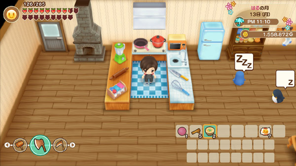
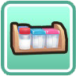
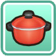
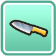
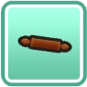
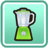
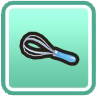

Cocinando


Cocinar es una actividad que puede beneficiarte tanto a ti como a tus relaciones con los aldeanos de Mineral Town. Puede comer comidas cocinadas para recuperar su resistencia y fatiga al comerlas, o regalarlas para aumentar sus puntos de amor y amistad con otras personas. También se pueden vender recetas cocinadas a Huang en su tienda.

Para empezar a cocinar necesitarás mejorar tu casa. Gotts ofrece la primera opción de remodelación de la casa por 150 de madera, 50 de piedra y 3,000 G. Le tomará 3 días mejorar su casa a un tamaño mediano. La remodelación de la casa incluirá el área de la cocina y dos recetas de cocina: Sashimi y Zaru Soba.
Lamentablemente, no podrás preparar esas comidas hasta que tengas también los utensilios de cocina adecuados. Estos se venden en el supermercado de Jeff y él le enviará una carta por correo cuando un utensilio de cocina esté disponible en su tienda de artículos generales:
| Utencilio | Precio | Desbloqueo |
|---|---|---|
 Condimentos |
2500 G | El día en que se complete la mejora de la casa mediana. |
 Olla |
1000 G | 10 días después de que salga a la venta los Condimentos. |
Sartén |
1200 G | 10 días después de que salga a la venta la Olla. |
 Cuchillo |
1500 G | 10 días después de que la Sartén salga a la venta. |
Horno |
2500 G | 10 días después de que el Cuchillo salga a la venta. |
 Rodillo |
750 G | 10 días después de que el Horno salga a la venta. |
 Batidora |
1200 G | 10 días después de que el Rodillo salga a la venta. |
 Varilla de batir |
1200 G | 10 días después de que la Batidora salga a la venta. |
También puede comprar un refrigerador de Gotts (2,500 G) para almacenar los ingredientes de sus comidas. Un refrigerador grande (5,000 G) estará disponible para su compra después de actualizar su casa al tamaño grande y haber sido propietario del refrigerador normal durante al menos 3 días.
Para acceder a la lista de recetas puede consultarlo en el recetario.
Cómo aprender recetas
En Story of Season Friends of Mineral Town no permite la cocina experimental como en el juego de GBA, donde puedes combinar una variedad aleatoria de ingredientes y esperar que no resulte en un plato quemado; de hecho, ni siquiera puedes preparar un plato fallido en esta versión de la serie. Debes conocer la receta para cocinar la comida . Hay un total de 120 recetas de cocina para coleccionar. Además, ¡NO necesitas ser dueño de la cocina para aprender recetas! Cualquier receta que aprenda antes de instalar su cocina se guardará en su libro de recetas de cocina.
Las recetas se pueden aprender:
- Como regalo de los aldeanos: Hay 15 recetas que recibirás de los aldeanos cuando te vuelvaas amigo de ellos como minimo 4 notas de amistad, dale un regalo que le guste y habla con ellos para aumentar la amistad.
- Viendo la televisión: Todos los martes en el televisor se trasmite un canal de cocina de 12 episodios donde a veces aprenderás una receta y otras veces aprenderás dos. También hay una receta del especial de Año Nuevo que se transmite en la primavera 5 de su segundo año (o después). Hay 16 recetas que se transmiten por televisión.
- Clase de postres de Anna: A medida que aumentas tu amistad con Anna, puedes desencadenar un evento aleatorio en el que ella te enseñe a ti y a Manna cómo cocinar algunos postres deliciosos. Hay cinco recetas que puedes aprender en su clase del sábado por la tarde.
- Colección de recetas de Lou: En la posada de Dudley en el segundo piso de la posada, todos los domingos estara ella. Si tienes ciertas recetas en tu libro de cocina, Lou te enseñará algunos platos clásicos de su ciudad natal. Lou tiene 10 recetas para enseñarte.
- Fuentes misteriosas: Hay 2 recetas de cocina que puedes encontrar en algunos lugares inusuales. La primera es de una Piedra ubicada en el nivel 255 de la mina que esta alado de la cascada, en dicha piedra esta la receta para hacer Ketchup. El segundo es un mensaje embotellado que puedes capturar mientras pescas en el océano durante la primavera, dicho mensaje tiene la receta de papas fritas.
- Por inspiración: La mayoría de las recetas de cocina le llegarán por inspiración. A medida que uses ingredientes, aprenderás más recetas que usan dichos ingredientes. Por ejemplo, si cocina 5 plato que usa un Huevo comun aprenderas la receta de mayonesa.
Ingredientes silvestres
Cuando te mudas por primera vez a la granja, el alcalde Thomas te aconseja buscar en el bosque artículos que puedas vender para ganar un poco de dinero. Buscar objetos salvajes en el suelo es una forma rápida de complementar los ingresos de tu granja al principio del juego. La variedad de artículos cambiará cada temporada y los artículos aparecerán diariamente, ya sea que hayas recogido los artículos del día anterior o los hayas dejado en el suelo. En algún momento, un artículo volverá a aparecer en el mismo lugar al día siguiente, pero eso no es una garantía.
Nota: Seleccione una estación.|
|
||
|---|---|---|
|
|
Nombre | Ubicación |
 Flor de luna |
Camino De La Colina, Pradera, Bosque Secreto, Bosque Del Sur | |
 Flor de juguete |
Camino De La Colina, Pradera, Bosque Secreto | |
| Brote de bambú | Matorral de bambú | |
| Hierba azul | Sendero de la colina, aguas termales, bosque secreto, bosque del sur | |
| Hierba amarilla | Playa | |
| Hierba naranja | Playa | |
 Hierba negra |
Se puede conseguir usando la azada en las minas de la cascada y el del lago. | |
|
|
Nombre | Ubicación |
| Flor de gato rosa | Pradera, Aguas Termales, Camino De La Colina, Bosque Secreto | |
| Uvas silvestres | Matorral de Bambú, Camino de la Colina, Bosque Secreto, Bosque del Sur | |
| Hierba azul marino | Aguas Termales, Bosque Sur | |
| Hierba verde | Matorral de bambú, sendero de colina, aguas termales, pradera, bosque secreto | |
| Hierba roja | Matorral de bambú, aguas termales, sendero de colinas, bosque secreto, bosque del sur | |
Hierba negra |
Se puede conseguir usando la azada en las minas de la cascada y el del lago. | |
|
|
Nombre | Ubicación |
| Flor mágica azul | Pradera, Aguas Termales, Camino De La Colina, Bosque Secreto | |
| Flor mágica roja | Granja (pocas posibilidades de tenerlo al plantar Flor mágica azul) | |
| Flor dulcesol | Bosque secreto | |
| Naranja | Bosque secreto, Granja (en uno de los árboles frutales que compras a Ghotts) | |
| Castaña | Camino De La Colina, Pradera | |
| Champiñón | Bosque de la Iglesia, Camino de la Colina, Pradera, Bosque Secreto, Bosque del Sur | |
| Hongo Venenoso | Bosque de la Iglesia, Camino de la Colina, Bosque Secreto, Bosque del Sur | |
| Hongo pino | Matorral de bambú*, Bosque de la Iglesia | |
| Hierba verde | Matorral de bambú, aguas termales | |
| Hierba roja | Matorral de bambú, sendero de colinas, aguas termales, bosque secreto, bosque del sur | |
| Hierba morado | Playa | |
Hierba negra |
Se puede conseguir usando la azada en las minas de la cascada y el del lago. | |
|
|
Nombre | Ubicación |
| Naranja | Bosque secreto | |
| Hierba blanca | Bosque de la Iglesia, Bosque del Sur | |
Hierba negra |
Se puede conseguir usando la azada en las minas de la cascada y el del lago. | |